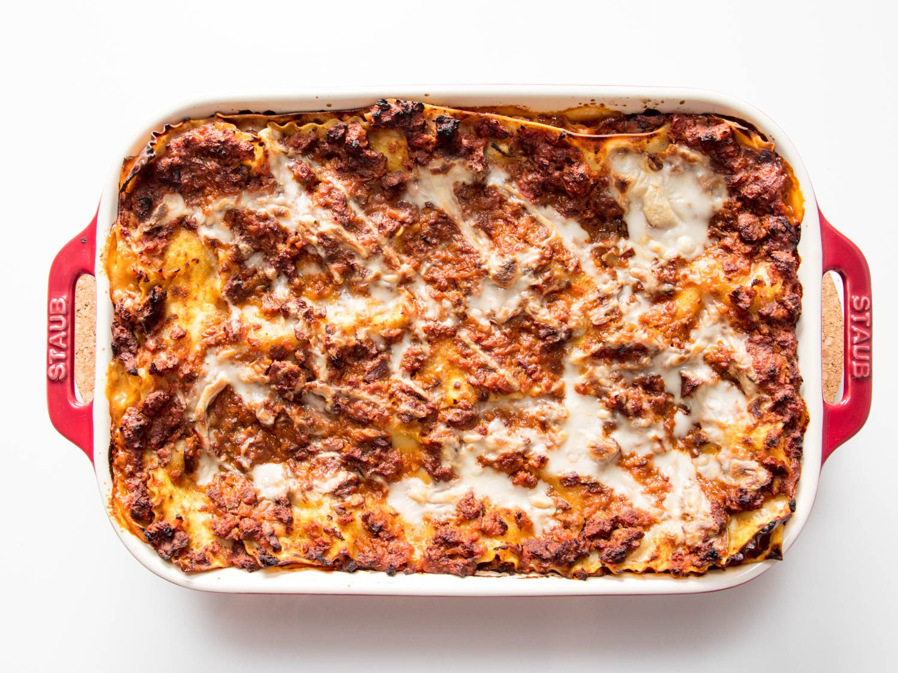

Ingredients:
Vegetable sauce:
- 2 red bell peppers
- 2 red onions
- 3 small courgettes
- 4 tbsp olive oil
- 2 tsp salt
- 5 cloves of garlic
- 2 tins of chopped tomatoes
- 2 bay leaves
- salt & pepper to tase
Bechamel sauce:
- 800 ml plant based milk (soy, almond or cashew)
- 100 g vegan butter
- 80 g flour
- 1.5 tsp salt
- pinch of black pepper
- pinch of nutmeg
Mozzarella:
- 1/2 cup cashews (soaked overnight)
- 1 cup water
- 3 tbsp + 2 tsp tapioca
- 1 tbsp nutritional yeast
- 1 tsp apple cider vinegar
- 1/4 tsp garlic powder
- 1.5 tsp salt
Method:
- Preheat the oven to 200C
- Chop bell peppers, onions and courgettes. Mix them with olive oil, salt and black pepper. Lay them into your casserole dish. Bake for 25 minutes
- Chop the onions and fry them for a few minutes on a dash of olive oil. Add bay leaves, garlic, tinned tomatoes and baked vegetables. Leave the sauce to stew for 5 to 10 minutes
Bechamel sauce:
- Melt butter on a frying pan. Add flour. Mix well
- While stirring, start adding plant based milk to the mixture. Remember to do it slowely, just one cup at a time
- Keep simmering and stirring the sauce untill it thickens
- Add salt, pepper and nutmeg
Mozzarella:
- Blend all the ingredients together
- Pour the mixture into a small sauce pan and constantly stirring, simmer untill it thinkens
Layering:
- Spread a forth of the bechamel sauce over your lasagne dish and cover it with pasta sheets. Pour a half of the vegetable sauce on the sheets, top it with bechamel and again coat it with pasta
- Repeat all the steps untill both vegetable sauce and bechamel are gone
- Put the last layer of lasagne sheets on the top and cover it with vegan mozzarella
- Put your lasagne to the preheated oven and bake for 30 minutes
